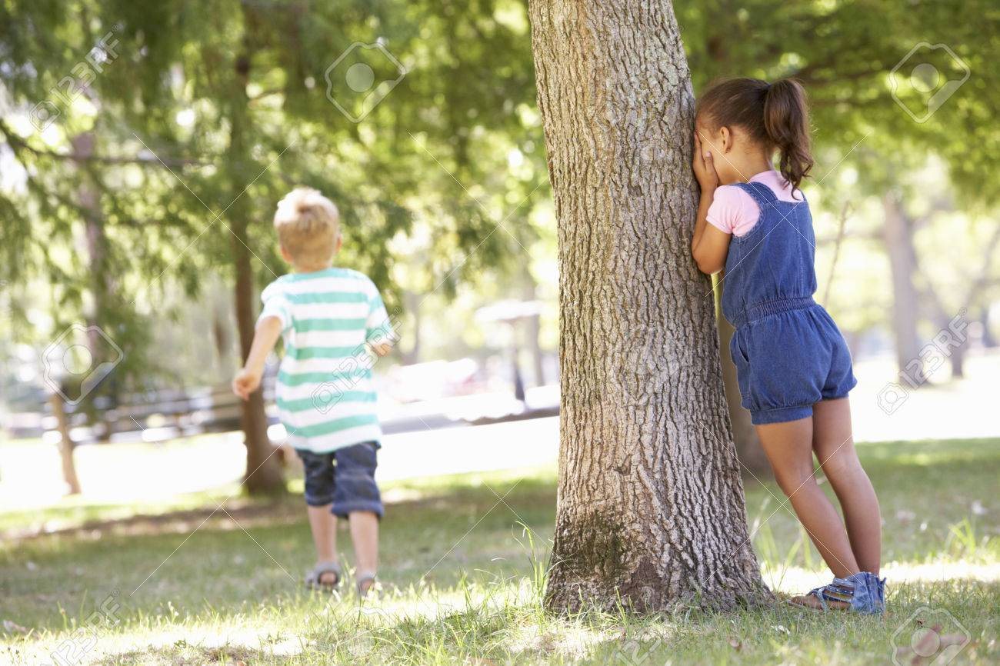
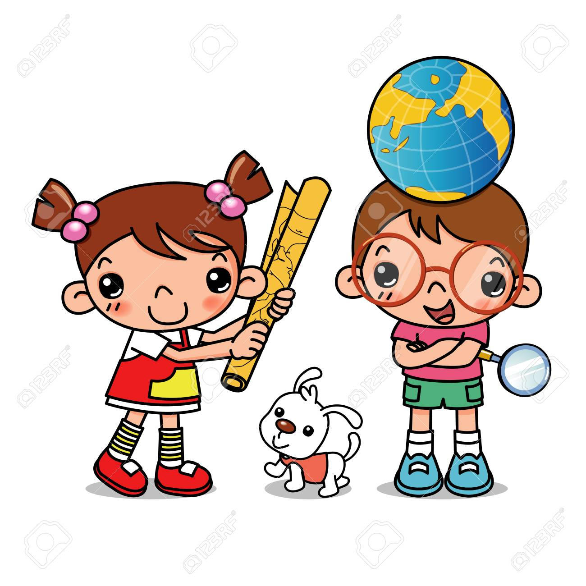

Las niñas y los niños llegan a un mundo construido. Un mundo físico, biológico, social y cultural, al que necesitan adaptarse y que los necesita para transformarse. En él encuentran elementos y posibilidades para interactuar gracias a sus propias particularidades y capacidades. Los sentidos gustar, tocar, ver, oler, oír- cumplen un papel fundamental en la exploración por cuanto sirven para aproximarse al medio de diversas maneras. Explorar permite a las niñas y los niños cuestionarse, resolver problemas, interactuar, usar su cuerpo, investigar, conocer, ensayar, perseverar, ganar independencia. Esta experiencia implica un proceso de construcción de sentido acerca de lo que pasa en el mundo y de lo que significa ser parte de él. El juego, la literatura, el arte y la exploración del medio son actividades en muchos casos interdependientes. Así por ejemplo, cuando la niña o el niño juega o explora, puede hacerlo manipulando materiales plásticos como pinturas o arcillas, con lo cual se acerca a una experiencia artística. También hay casos en donde el juego se combina con la expresión literaria y musical Texto tomado del documento Fundamentos políticos, técnicos y de gestión de la estrategia de atención integral a la primera infancia.

Busco mi pareja
Es una actividad que se debe jugar en grupo. Este grupo se divide en parejas. Cada pareja acordara una señal o un sonido que les identifique. Una vez eligen el sonido, todos tienen que vendarse los ojos y dispersarse por el lugar abierto puede ser el patio de una casa. Las parejas tendrán que encontrarse siguiendo el sonido de que previamente han acordado. Es un juego divertido y centrado en desarrollar la capacidad de orientación espacial del pequeño.
El forastero errante
Para cada una de estas actividades se debe tener un mapa con dibujos que propiciara la persona a cargo de la actividad, luego se menciona una ciudad como punto de partida del forastero errante, luego determina una ruta, no se deben dar los nombres de los lugares, se nombra la ciudad de partida. Después de salir de la ciudad pasa un rio y luego a una terminal de transportes, se describen algunas circunstancias del viaje como frio o calor cansancio del viaje entorno y encontrado en cada punto de referencia algún objeto escondido, quien tenga más objetos y encuentre más lugares ganara.
Ha llegado una carta

Se colocan todos los niños y niñas situados al fondo de un espacio amplio como puede ser el patio de una casa. La persona a cargo dice “ha llegado una carta”, los niños responden: ¿para quién?, se nombra un niño/a y la pregunta: ¿Qué dice?, y se responde con una orden, por ejemplo, que, de 5 pasos de gigante hacia el parque, o hacia otro lugar del espacio en el que estén ubicados. Finalmente ganara el primero que llegue donde está la persona encargada.
Las zanahorias
Ubicados en todo el patio del salón se formarán dos equipos el rojo y el azul luego trazaran dos líneas una de salida en la que se formaran los niños y otra línea a una distancia de 10 metros donde se colocaran dos cajas respectivas a los colores en las cuales se encontraran las zanahorias, verticalmente se dibujaran dos líneas correspondientes a los equipos.
A la señal de la persona encargada salen los niños de cada equipo caminando sobre una línea con los brazos extendidos llegan a las cajas donde tomaran dos zanahorias y la llevaran una en la mano con los brazos extendidos regresan dándole la zanahoria al otro niño que hará que saldrá realizando el recorrido inverso, luego saldrá un representante de cada grupo con los ojos vendados, el grupo dará las indicaciones para dicho representante encuentre la caja mágica y así devolverse y guardas las zanahorias, quien lo haga primero gana.
Juegos en línea
A continuación, mostraremos un listado de juegos en línea los cuales sirven para mejorar las habilidades de los niños en el ámbito de la exploración del medio.